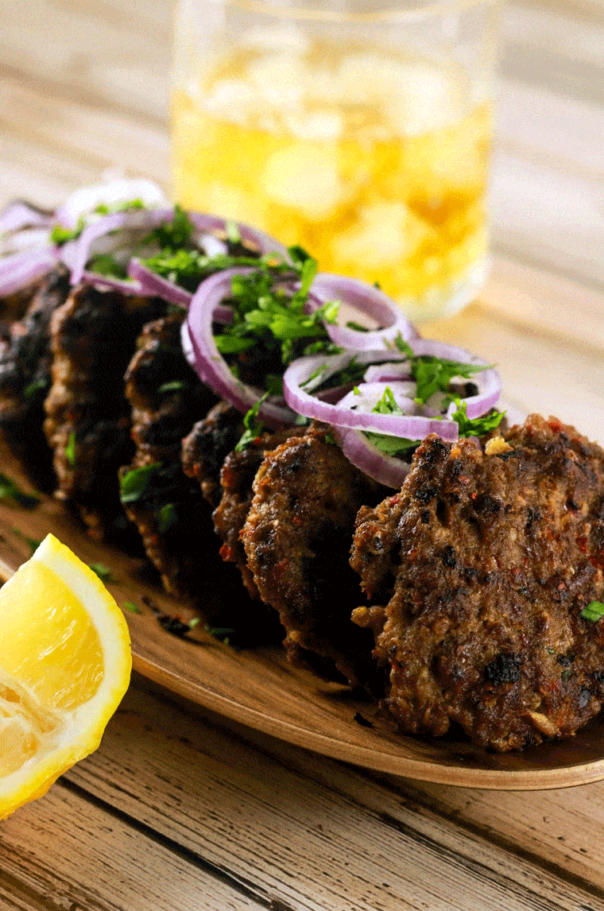

Chapli Kabob

Description:
A Pashtun-style minced kebab, usually made from ground beef,
mutton or chicken with various spices in the shape of a patty.
Chapli Kabab originally comes from the northern areas of Pakistan,
in particular Peshawer, capital of Khyber Pakhtunkhwa province.
The Pekhawri Chapli Kabab is made with beef and is a popular
Street Food throughout Khyber Pakhtunkhwa and other parts of Pakistan,
as well as in eastern Afghanistan. It can also be found
in some parts of Bangladesh and India.
Ingredients
- 3 tbsp coriander seeds
- 1 tbsp cumin seeds
- 1/4 tsp carom seeds
- 3 tbsp corn flour
- 1 lb ground beef
- 1/2 large red onion
- 2 green scallions
- 2-4 green chillis
- 3-4 garlic cloves
- 3/4 inch ginger
- 1/4 cup cilantro
- 1 tsp red chilli powder
- 1/4 tsp ground black pepper
- 2 tsp kosher salt
- 1 egg
- 1 small roma tomato
- neutral oil
Steps
- Heat a small to medium skillet over medium-low heat. Add the coriander seeds, cumin seeds, and carom seeds (if using). Toast, stirring and shaking the skillet often, for 3-4 minutes. The seeds will deepen in color and become highly aromatic. Remove from heat and transfer to a spice grinder, food processor, or mortar and pestle. Add pomegranate seeds to the spice grinder. Pulse to roughly grind 4-5 times (you don’t want a fine powder, just roughly crushed up seeds).
- In the same skillet over medium heat, add the corn flour or chickpea flour. Toast until it deepens in color and smells toasty (~4-5 minutes). Turn off the heat and allow to cool.
- In a medium bowl, add the ground beef along with the remaining ingredients (ground coriander mixture, toasted corn flour, red onion, green onion, green chili pepper, cilantro, garlic, ginger, red chili flakes, red chili powder, black pepper, salt, egg, and tomatoes (if using)).
- Using gloved hands (try not to use bare hands or the green chili may sting), knead for 3-4 minutes, until you begin to see a lacy, stringy texture (resha) of the meat. (Alternatively, you can use the paddle attachment of a food processor and knead on medium speed for 2-3 minutes.) The mixture should be homogenous instead of crumbly. Cover and set aside or refrigerate up to 24 hours.
- Heat a cast iron skillet over high heat. Add enough oil to generously cover the bottom of the skillet.
- To test a piece for taste, place a piece of the beef mixture on the pan to cook, turning over as needed. Taste and adjust salt and seasoning if desired.
- Using oiled hands, take around 1/4 cup heaped (~90g) of the meat and form into a hearty round shape.
- Place the round ball on the hot cast iron and use the flat part of a sturdy spatula to press it down until it is 4.5 inches in diameter and no more than 1/3-inch/¾-cm thick.
- Use a spoon or small spatula to flatten and spread (uneven sides add character!). Fry for 1 ½ to 2 minutes on each side, using your spatula or a spoon to push oil on top of the kabab. Do not overcook. You want it crispy and charred on the outside and just cooked on the inside.